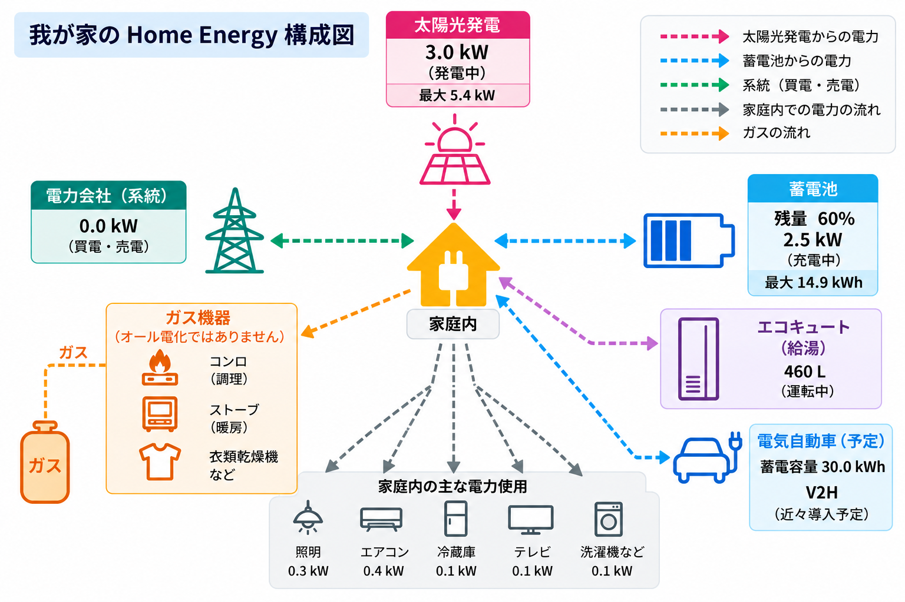
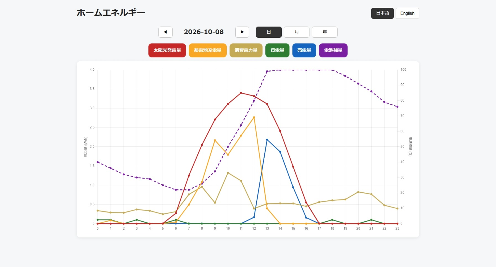
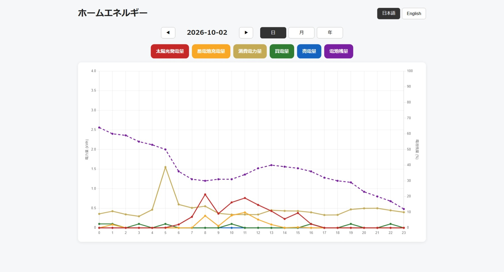

私たちは日々の生活において、化石燃料に大きく依存しています。ホルムズ海峡をめぐる紛争やオイルショックなどによって石油の流通が滞れば、私たちの生活・産業・経済は多大な影響を受けます。エネルギー供給の代替案はないものでしょうか？
そこで、ここでは一家庭における「太陽光発電の実際」をお届けしたいと思います。すでに太陽光発電を始められている方、これから太陽光発電を検討されている方に参考にしていただければ幸いです。
我が家は千葉県船橋市にある中古の4LDK戸建て住宅で、4人家族で暮らしています。少し階段を上った場所に建っており、屋根は南西向きですが、日当たりは良好です。屋根の形状は必ずしも太陽光パネルの設置に最適とは言えませんが、太陽光パネル17枚を設置し、設備容量5.425kWの太陽光発電システムを導入しています。太陽光パネルだけでなく、蓄電池（容量14.9kWh）、エコキュート（460L）も設置しています。近々、電気自動車とV2Hも導入予定です。なお、我が家はオール電化ではありません。火を使った調理を好むため、コンロ、ストーブ、衣類乾燥機などにはガスを使用しています。
我が家のHome Energy構成図を下記に示します。

1. 太陽光発電導入前の電力消費量
我が家の年間電力消費量は平均約4,500kWh（電気料金約17万円）で、月平均では375kWh（約1万4千円）です。夏場はエアコンの使用により電力消費量が増加し、8月には650kWh（約2万2千円）に達します。
2. エコキュート導入前のガス料金
我が家の年間ガス料金は平均約14万円で、月平均では約1万2千円です。冬場はガスストーブの使用によりガス料金が増加し、1月には2万3千円を超えます。
3. 電気自動車導入前の自家用車事情
我が家ではハイトワゴンタイプの軽自動車を所有していますが、車を使用する機会はそれほど多くありません。7年間の走行距離は約2万kmです。主な用途は近所での買い物や飲食店への移動で、自家用車で旅行するのは年に数回程度です。その際も、往復4時間ほどの距離がほとんどです。
4. 太陽光発電＆エコキュート導入後の電力事情
エコキュートの導入によりガス代は削減できますが、その分、電力消費量は増加します。我が家が契約している電力会社には夜間割引がないため、夜間にエコキュートでお湯を沸かす料金面でのメリットはありません。むしろ、昼間の太陽光発電による電力を直接利用し、外気温が高い時間帯にヒートポンプの効率も高めながらお湯を沸かす方が経済的です。電力消費量の多い朝方や夜間は、太陽光発電だけでは十分な電力を確保できないため、蓄電池を朝晩の電力需要を補うバッファとして活用することが非常に有効です。各蓄電池メーカーは電力フローをモニタリングするアプリを提供していますが、私は自分自身で自由にカスタマイズできるモニタリングシステムを開発しました。我が家の1日の電力フローの例を以下に示します。
【晴天の日（10月）】

晴天の日は蓄電池の充電率が100％に達し、それ以上の余剰電力は売電に回されます。しかし、売電単価は以前より低下しており、余剰電力を売る経済的なメリットは小さくなっています。一方、雨天の日には発電量が大きく減少し、残念な結果となります。
【雨天の日（10月）】

したがって、余剰電力をできるだけ売電に回さず、雨天の日の電力需要もカバーできるように、蓄電容量を増やすという選択肢が考えられます。そこで、移動手段としても利用できる蓄電池、すなわち電気自動車の導入という発想につながります。
5. 電気自動車導入のメリット
現在、電気自動車は単に「ガソリンではなく電気で走る自動車」という、移動手段のエネルギー源の違いだけにとどまりません。前述のように、晴天の日に定置型蓄電池が満充電になった際には、余剰電力を「移動できる蓄電池（電気自動車）」に蓄えることが可能です。さらに、V2H（Vehicle to Home）というシステムを利用すれば、雨天時や非常時に電気自動車から自宅へ電力を供給することもできます。電気自動車の導入後は、雨天日など短期間の電力不足を補うだけでなく、夏季や冬季など太陽光発電だけでは電力が不足する時期に、長期間のバッファとしてどの程度活用できるのかも実験していきたいと思います。
さらに、我が家の自家用車事情でも述べたように、我が家では市街地での近距離移動がほとんどです。一般にガソリン車は高速道路などで一定速度の長距離走行をする方が燃費が良くなる傾向がありますが、電気自動車は高速走行よりも市街地走行の方が電費が良くなる場合があります。これは、減速時に運動エネルギーを電力として回収する回生ブレーキなどによるもので、非常に興味深い特徴です。現在使用している軽自動車の市街地での実燃費は14～15km/L程度です。燃料タンク容量は27Lなので、満タン時の市街地走行距離は約380～400kmです。最近では、30kWh程度の電池容量で300km以上走行できる軽電気自動車も登場しています。市街地での使用が中心であれば、満充電時の航続距離はガソリン車の満タン時に近づいてきています。軽ガソリン車は満タンにするのに4,000円弱かかりますが、軽電気自動車は自宅での買電による充電であれば約1,000円です。さらに、太陽光発電の余剰電力で満充電にできれば、充電のための追加的な買電コストもかかりません。
6. 導入コストと投資回収期間
導入を検討されている方の中には、「導入費用の元が取れるのか」という懸念もあるかと思います。導入コストについては、太陽光発電の施工業者や設備構成によって異なるため、具体的な金額は伏せさせていただきますが、発電量の概算や導入費用の見積もり、DR補助金の適用可能性については無料で相談できる場合が多いため、我が家の発電量と消費量を参考に投資回収期間を試算していただければ幸いです。
設備の経年劣化なども含め、将来の予測は難しいところがありますが、我が家では年間20万円以上の光熱費を削減できる見込みがあり、10～15年程度で導入費用を回収することを目標としています。
いずれにせよ、太陽光発電、エコキュート、電気自動車の導入は、私にとって個人的な経済的利益のためというよりも、趣味への投資のようなものだと思っています。天気予報と太陽光発電の動向を観察し、光熱費のオプティマイゼーションを追求するだけで十分楽しいので。
まとめ
太陽光発電は、SDGsのような思想や理念だけでなく、合理的かつ経済的な選択肢としても進化しています。製造過程における環境負荷や人権問題などの課題もありますが、再生可能エネルギーの活用を検討していくことは理にかなっていると思います。
太陽光発電だけでなく、洋上風力発電、小水力発電、潮流発電、地熱発電など、再生可能エネルギーにはまだまだ発展の余地があります。日本は海に囲まれた地震大国ですが、地震大国ゆえに豊富な地熱資源があり、山々の起伏が河川の流れを生み、周囲には広大な海が広がっています。こうした地理的条件を考えると、日本は再生可能エネルギーの大きな可能性を秘めた国なのかもしれません。
太陽光発電を始めてつくづく思うのは、「今までこんな貴重なエネルギーを捨てていたのか」ということです。太陽光発電導入後、電力会社からの買電量はほぼゼロになりました。これまでは活用可能な太陽光エネルギーを利用せず、貴重な化石燃料も消費していたわけです。
未来の世代に少しでも貴重な化石燃料を残してあげられるよう、あなたも Energy Rich Man になって、One of the beautiful people になりませんか！